用文字創作
確認連線與模型，填描述，再明確生成並匯入作品。
啟動 → 模型 → 創作從五種創作目的開始，逐步學會整理作品、管理模型與素材，以及完成四階段的 LoRA 訓練。按你的需求選一條路線，不必一次讀完。
確認連線與模型，填描述，再明確生成並匯入作品。
啟動 → 模型 → 創作先上傳素材，再選圖片重繪、局部修補、結構引導或風格參考。
素材 → 選擇創作目的審查與匯出資料，確認獨立環境，再準備及開始訓練。
審查 → 匯出 → 準備 → 執行01
左側圖示負責切換頁面；頁面內的分頁負責選擇目的、分類或階段。
環境已安裝時，雙擊專案根目錄的
start-all.bat，保留服務視窗，等待瀏覽器開啟
本機平台。第一次使用先依安裝與操作文件完成依賴、ComfyUI 與模型安裝；啟動捷徑不會代為安裝。
原生預設位址為
http://127.0.0.1:8188。「測試（不保存）」只檢查輸入的位址；要讓平台使用它，按「保存並套用」。平台能開啟，不代表引擎已連線。
切到需要的模型分類並按頁首同步，確認模型架構與必要元件。同步不下載模型、不載入權重，也不代表所有工作流程都能執行。
| 入口 | 使用時機 |
|---|---|
| 創作 | 選目的、填描述與模型、生成及查看主舞台結果。 |
| 作品庫 | 匯入已完成任務、收藏、筆記、評分、下載及並排比較。 |
| 比較 | 建立可保存的參數實驗方案；頁面標題為「實驗比較」。 |
| 素材 | 上傳與整理輸入圖片；頁面標題為「參考素材」。 |
| 模型 | 同步與登記五類模型，切換清單／卡片。 |
| 訓練 | 審查資料、匯出資料包、準備訓練及查看執行與產物。 |
| 系統 | 區分平台主機、選定引擎、儲存目錄及本機安裝環境。 |
| 設定 | 管理連線、模型路徑、外觀與語言、資料隱私及診斷。 |
可以整理已保存資料時，不一定需要引擎在線。只開平台可使用
.\start-local.ps1；生成則需要獨立引擎。
02
上方五個目的決定要準備哪些輸入。左邊編輯、底部生成，右邊看原圖、遮罩或真實任務結果。
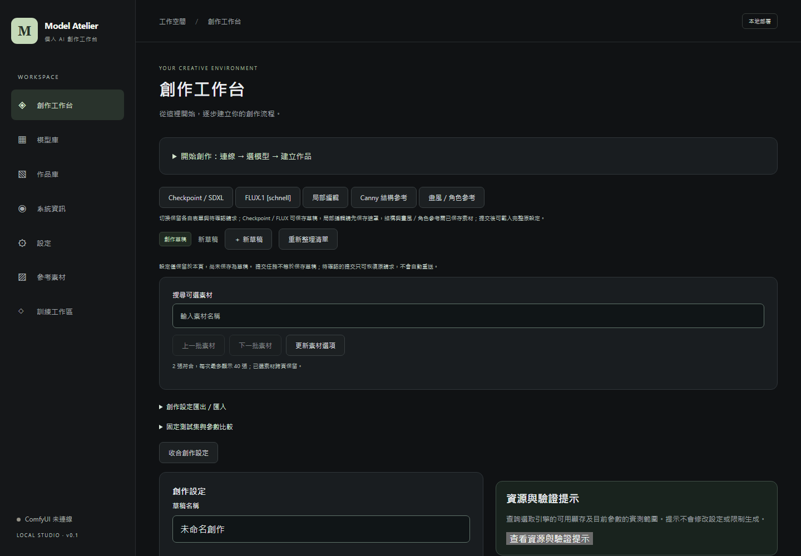
點擊放大 ↗選「文字創作」，在「模型架構」確認 Checkpoint 或 FLUX，再選相容模型或固定元件。填入畫面描述，選輸出比例；需要自訂尺寸、Seed、步數、取樣器或 LoRA 時展開「進階設定」。
層疊的綠色山巒，午後柔和陽光，一條蜿蜒的小徑，紙感插畫。
欄位錯誤會顯示在對應欄位下方；引擎離線、缺少元件等阻擋則附處理入口。完成檢查後按「生成圖片」。表單顯示可提交，仍會在提交時重新核對引擎與元件。
完成任務後，右側顯示原任務輸出。用「任務與歷史資訊」查看任務及保存入口，或前往作品庫按「匯入任務結果」，選取已完成任務後明確匯入。只切頁、保存草稿或載入設定都不會自動生成，也不會自動把未匯入結果變成作品。
| 目的 | 操作順序與重點 |
|---|---|
| 文字創作 | 描述 → 模型 → 尺寸 → 生成。Checkpoint 與 FLUX 的元件、參數及支援配置分開核對。 |
| 圖片重繪 | 先選來源素材，再填描述、模型與輸出尺寸。展開「進階設定 → 重繪設定與輸入預覽」調整重繪強度與縮放方式；fit 保留比例，stretch 可能改變構圖比例。 |
| 局部修補 | 選來源 → 描述與相容模型 → 繪製遮罩 → 保存遮罩 → 生成。沿用原圖像素，不用輸出比例變更遮罩幾何。專用修補流程另有元件與格式限制。 |
| 結構引導 | 選來源 → 描述、模型與尺寸 → 結構方式 Canny／Pose／Depth。Canny 的 CPU 邊緣預覽需另按「預覽 Canny 邊緣」，它是近似結果；Pose／Depth 的條件由引擎產生。 |
| 風格參考 | 選單張來源 → 描述、SDXL 模型與尺寸 →「畫風參考」或「角色外觀參考」。確認 IPAdapter／影像編碼器等相容元件，再在進階設定調整作用參數。 |
不能。一般 Checkpoint 流程與 FLUX 專用工作台分開；不支援的組合會停用並說明原因。FLUX 基本頁使用固定四元件文生圖；既有「FLUX LoRA／圖生圖」另有固定配置，不等於一般局部修補、結構或身份參考均可使用。以工作台「相容性與實測」為準，不任意混用 SDXL LoRA 與 FLUX。
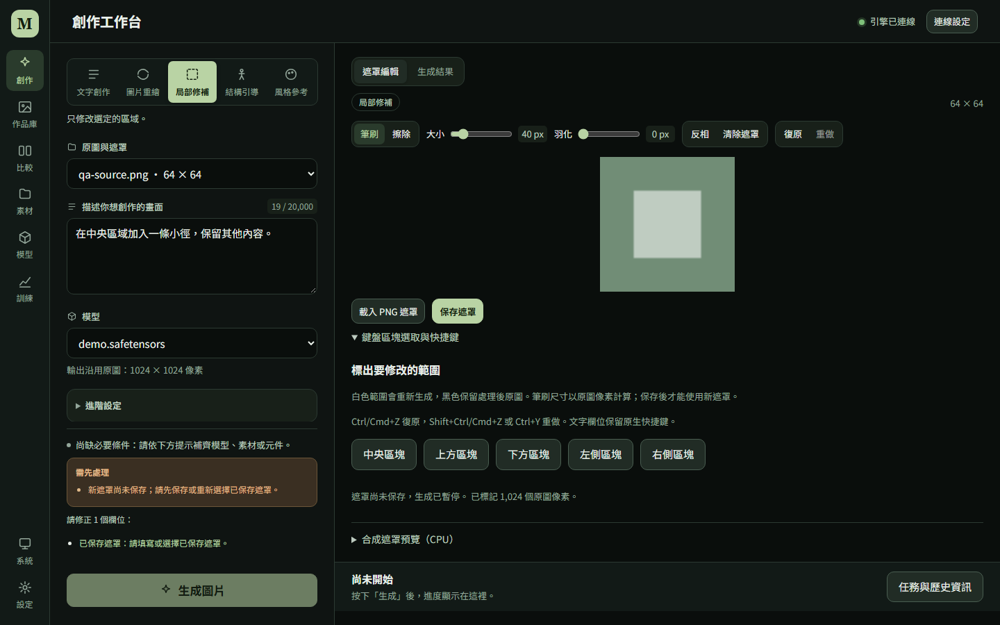
點擊放大 ↗遮罩可用筆刷、擦除、復原／重做與 PNG；「鍵盤區塊選取與快捷鍵」可選中央、上下左右，Ctrl/Cmd+Z 復原，Ctrl+Y 或 Shift+Ctrl/Cmd+Z 重做。送出前先保存遮罩。
一般 Checkpoint／FLUX 的「草稿與設定交換」可保存或交換支援的設定；專用流程則以自己的來源與流程資訊為準。保存素材或遮罩，不等於已保存整份創作表單。站內切頁與重新整理的保留能力不同；離開前保存可保存的內容。文字創作會清除目前圖生圖來源，再切回重繪需重新選圖。
結果以原任務的模型、尺寸與設定為準。未確認的提交用原請求恢復，不要另按生成來猜測是否成功。
03
清單用來找模型，登記資料用來追溯；生成能力仍由對應工作流程檢查。
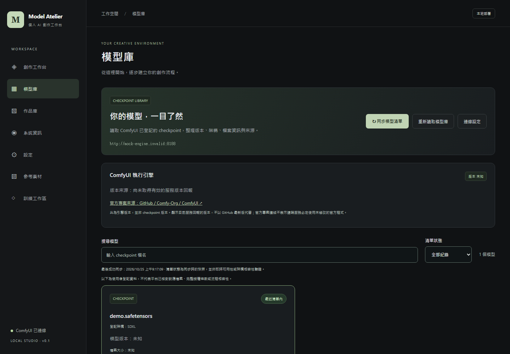
點擊放大 ↗五類為 Checkpoint、LoRA、結構控制、元件、FLUX 元件。頁首的同步按鈕會跟著分類改名；同步不會替其他分類安裝檔案。
展開項目資料，核對架構、版本、來源、SHA256、授權及驗證紀錄。未知就保留未知，不填猜測值。
Checkpoint 的「套用到創作」會帶入模型，不會自動生成；其他分類依畫面編輯登記與來源。保存「偏好模型」只記錄偏好，不載入權重。LoRA 的順序與模型／CLIP 強度可在支援的創作設定中調整。
最近引擎清單中存在的模型，仍可能缺少相容元件、授權來源或指定配置的實機證據。遇到同步失敗時，歷史清單不代表目前仍可使用。
深入閱讀：LoRA 與有序串接 · FLUX 安裝 · 模型來源與條款
04
素材是輸入圖片。用途標籤幫助整理，不會直接訓練，也不是身份或畫風保證。
填名稱與用途，可依角色、畫風或構圖整理。用搜尋與用途篩選找圖；無結果時可「清除搜尋與用途篩選」。
集中查看尺寸、像素量、檔案大小與前處理資訊。「編輯素材資料」修改名稱／用途；右上角可封存或關閉，「另開原圖」以新頁開啟保存的圖片。
平台依用途帶到對應創作入口。再核對來源、模型、工作流程與參數；此操作不會生成或加入訓練。被既有方案引用的素材可能無法封存，請依提示處理引用關係。
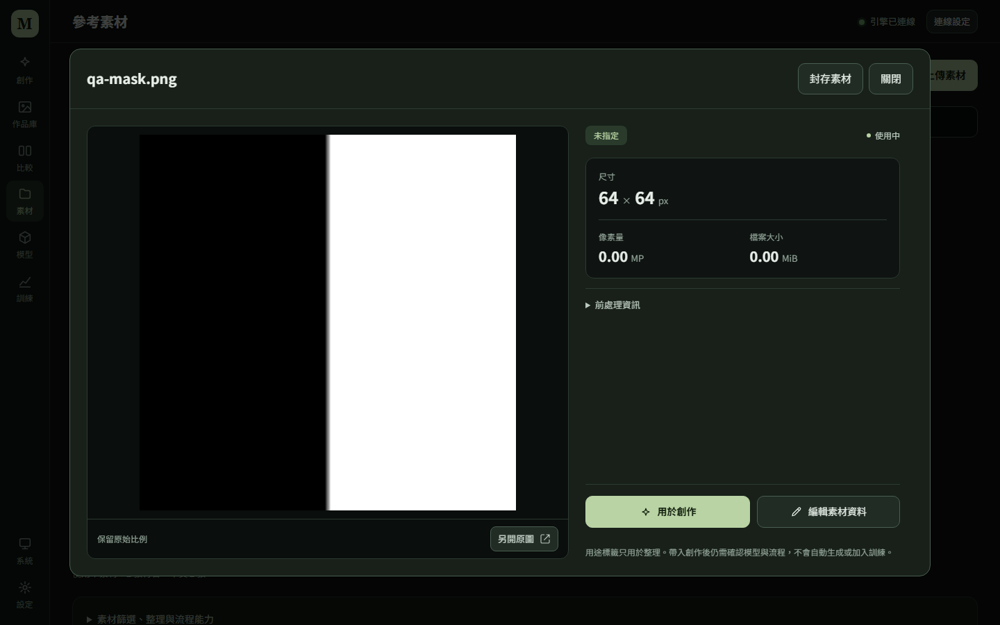
點擊放大 ↗畫風／角色參考每次使用一張圖作推論條件，不會讓模型記住它。要產生可重複使用的 LoRA，需另外建立與審查訓練清單，再明確開始訓練。角色外觀參考不保證身份鎖定。
05
瀏覽、收藏與選取是不同動作。點圖片看詳情；點左上勾選鈕才加入批次操作。
頁首「匯入任務結果」可選已完成任務。作品可依名稱、模型、收藏／封存狀態與排序查找；「固定」統一排列，「瀑布流」保留圖片比例。超過一頁時使用分頁，已選取作品不因換篩選就直接清空。
右上星號切換收藏；左上勾選加入選取列。先選 2–4 張，再按「並排比較（2–4 張）」才進作品比較頁。選取列也提供批次封存／還原、原圖 ZIP 下載與清除選取。
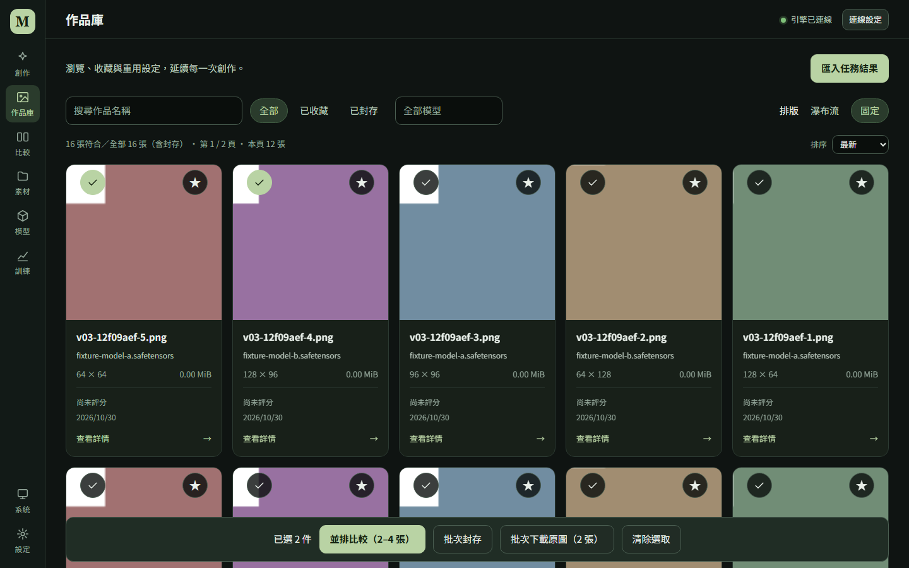
點擊放大 ↗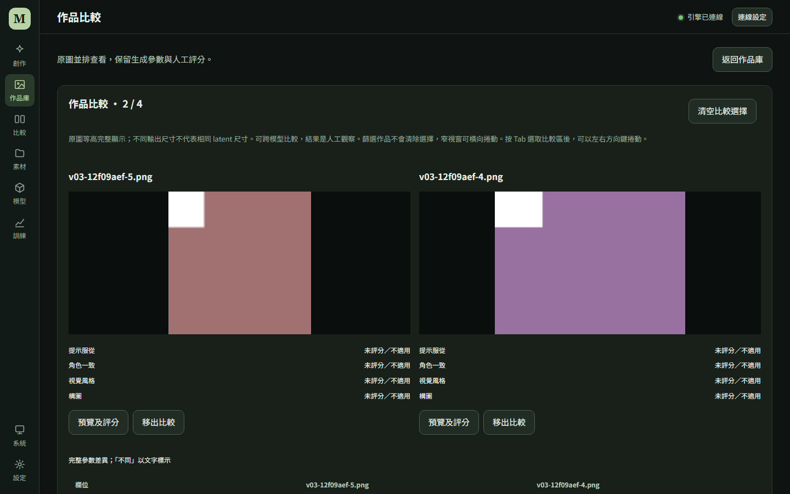
點擊放大 ↗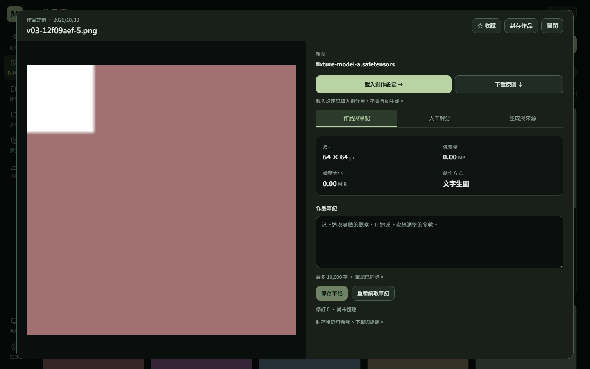
點擊放大 ↗「載入創作設定」只填入支援流程的表單，仍須重新確認再生成。封存後可還原、預覽與下載；封存不刪除原圖，也不釋放磁碟容量。批次部分失敗時查看每件結果，不要把整批都當成成功。
06
這裡比較「參數方案」；作品庫的並排比較則比較「已經存在的圖片」。
確認 Checkpoint、提示詞、尺寸、Seed 與 LoRA；再到側欄「比較」開啟「實驗比較」。目前支援一般 Checkpoint 文字創作／單張重繪，專用修補、結構、adapter 參考及 FLUX 不直接套用一般方案。
依畫面選測試集、案例、Steps、CFG、Seed、模型或其他支援的軸。Seed 用精確字串，例如
["42", "9007199254740993"]；總計最多 8
組。固定案例會替換正向提示詞，預覽不會生成。
保存與匯入 JSON 都不會排程執行。「載入這組設定」回到工作台後，明確按生成；每組完成後依原方案關聯任務及匯入作品。載入過不等於生成成功。
保留基準、失敗案例與人工評分，按畫面提供的入口查看任務／作品並下載結果報告。不要只挑最好的一張，或把人工評分當成模型自動驗證。
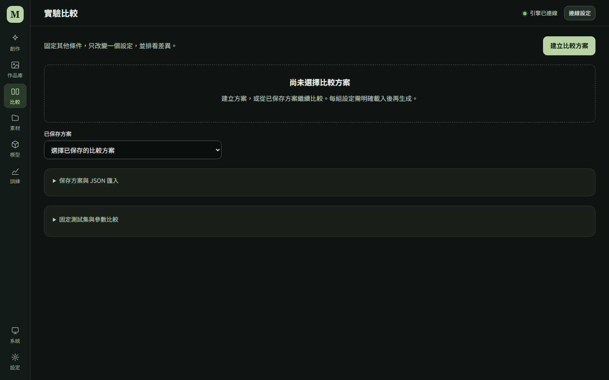
點擊放大 ↗07
先確認圖片與來源，保存可追溯的版本，再匯出訓練用資料包。這兩階段都不會啟動訓練。
parent_study 時需提供對應原
JSON，保持原始 bytes，不重新格式化。也可展開「資料集匯入、選擇與版本管理」，填來源目錄並選清單，再按「匯入待審查清單」。既有資料集則直接在版本管理中選取。
較寬視窗以左側縮圖與待補標記定位，中間看原圖，右側編輯；1000px 以下改為由上到下的縮圖、原圖、標註表單，向下捲動即可操作。較完整欄位位於「標註、來源依據與角色詳細資料」。搜尋、用途與缺項篩選可縮小範圍；圖片描述只寫實際看見的內容。來源不確定就保留待核對，角色資料另確認目標身分與 subject ID。
可用「保存並看下一張」逐張處理，或「保存新版本」。核對審查人、來源用途與角色欄位；出口檢查使用已保存版本，不採未保存輸入。原圖內容或位置有變時先處理來源，不修改校驗值來繞過檢查。
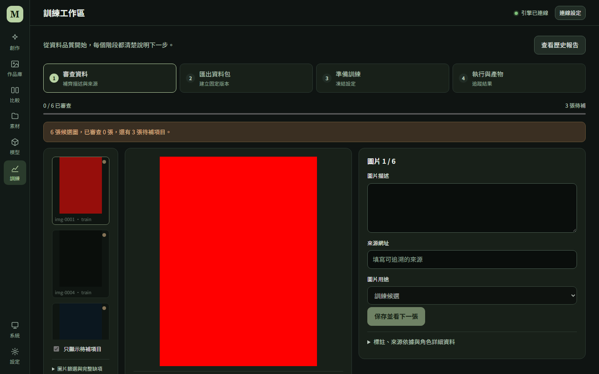
點擊放大 ↗核對「圖片描述與標註審查」「來源與訓練用途依據」「分組與角色身分」「原圖與其他完整性」。有問題時按「回到待補項目」；完整缺項與檢查版本可展開。
只複製 train 圖片與 caption；validation、test、excluded 不進 trainer 目錄。確認狀態 completed，再前往準備訓練。回應不明時按「查回原匯出結果」，不重做一份。
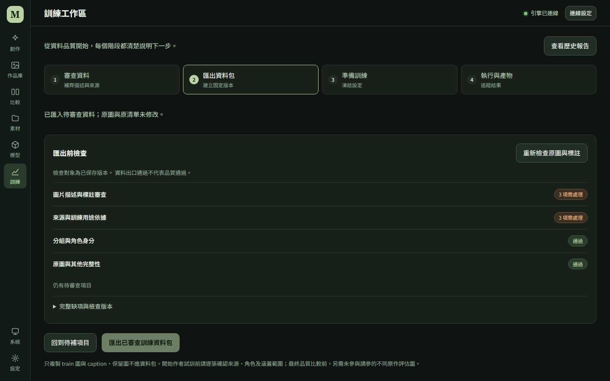
點擊放大 ↗同原作的裁切或差分保持同組，避免跨訓練與評估。未曝光的最終 test 應在第一次匯入前分開；介面不預覽它。已看過、作參考或調參的圖，不能再改稱盲測。缺圖時補對應來源與內容範圍，不複製圖片湊數。
08
網頁負責控制既有的獨立 Windows 訓練環境；它不會自動安裝 trainer，也不會替你關閉其他程式。
依訓練環境文件安裝固定 trainer，再展開「訓練環境與資料清單」按「檢查獨立訓練環境」。基底固定為 Animagine XL 4.0 Opt；Docker／非 Windows 部署不提供此原生訓練控制。
在「已封存資料包」選擇剛完成的版本。「訓練參數與裝置設定」內保留用途、尺寸、rank、步數、保存間隔、learning rate、seed 與 NVIDIA 裝置 index。畫面預設與技術測試步數都不是作者畫風訓練配方。
準備凍結來源、設定與 hash，產生可追查的 run。回應不明時查回原訓練請求；需要改設定就準備新請求，不覆寫既有 run。按「開啟新 run」核對內容。
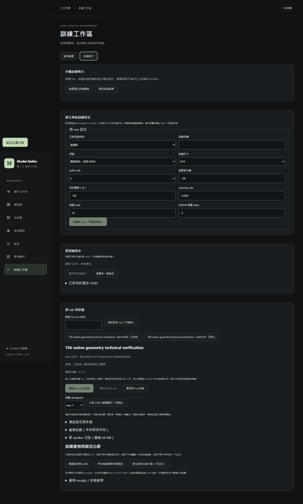
點擊放大 ↗等待生成工作結束，按環境文件停止受管理的 ComfyUI 與會共用資源的本專案容器，保留原生平台。核對原 run 後按「開始此 run 的訓練」；不要一邊用 start-all 重啟引擎一邊訓練。
摘要顯示已回報步數、凍結總量與資源狀態，可更新摘要或看日誌。離開頁面不會停止 worker。需要停止時按「停止訓練」或原 run 的停止入口，等狀態完成且程序／租約釋放後，才恢復生成。
展開原 run 的詳細控制，準備另一個請求，選尚未達總步數的完整 checkpoint，再按「以新 UUID 準備續訓（不開始）」。新 run 仍需明確開始，總目標沿用原設定，不會額外再加一份步數。
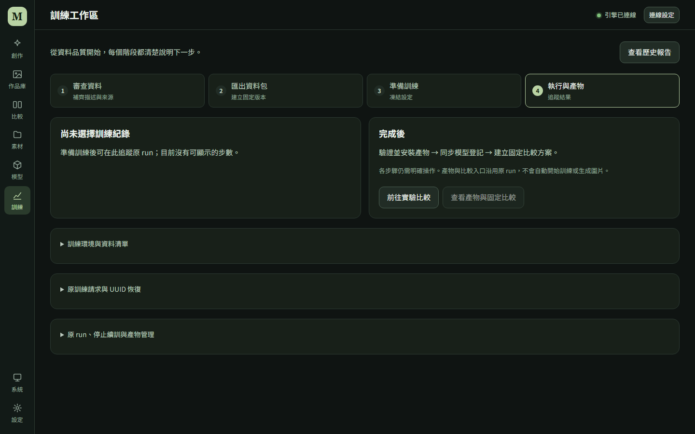
點擊放大 ↗用頁首「查看歷史報告」進入「訓練紀錄與診斷報告」，選原 run，先預覽 JSON，再明確下載。預設不含原圖、caption、本機路徑、GPU UUID 與日誌；需要日誌時勾選後重新預覽、檢查再自行分享。報告不是完整備份。
開始結果不明時查回原 run，不自動再次開始。讀取失敗保留上次快照，不把未知進度當成 0%；停止要求已送出也不代表 worker 已釋放。
09
安裝成功只證明產物與來源一致，不代表畫風、角色品質或授權已經通過。
「查看產物與固定比較」可定位詳細區。依序核對來源、完整 hash 與產物，再使用「驗證並安裝 LoRA」。
執行
.\start-comfyui.ps1，核對平台選定引擎，再用產物區的「同步模型庫與來源登記」。技術用途或條款待核對標記不會因同步自動消失。
「建立固定比較方案（不生成）」只保存方案。前往實驗比較，以同一模型、提示詞、尺寸、Seed 與取樣條件比較基底與 LoRA，再把結果放進作品庫並排觀察。
畫風看線條、色彩、構圖泛化；角色另外核對臉部、髮飾、服裝及不同姿勢。開發圖可用於調整；設定凍結後才看獨立保留圖。自製幾何圖技術訓練成功，不能代替作者品質結論。
10
上方先看整體結論及摘要卡；下方四分頁用來查明資料來源，不把不同主機的數字混在一起。
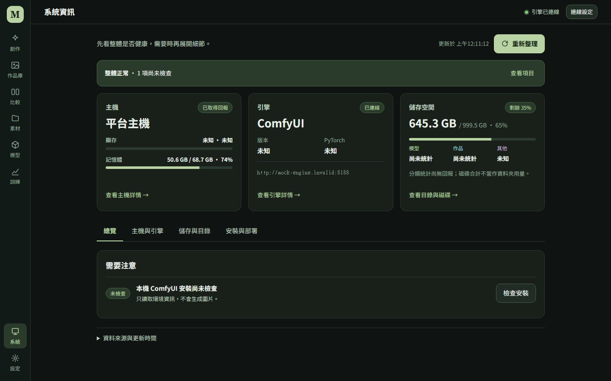
點擊放大 ↗| 分頁 | 可查看與操作的內容 |
|---|---|
| 總覽 | 只列需要注意或尚未檢查的項目，依操作入口處理。 |
| 主機與引擎 | 平台主機的 OS、Python、資料目錄與 GPU；選定引擎的環境、裝置及 Torch 記憶體細節。遠端引擎不等於平台所在電腦。 |
| 儲存與目錄 | 展開目錄摘要看完整路徑、磁碟可用空間與資料夾圖示。容量描述整個磁碟區，不是該資料夾的遞迴用量；分類容量未提供時保留未知。 |
| 安裝與部署 | 明確執行本機 ComfyUI 安裝檢查，查看上次快照及本機／容器／遠端部署差異。本機安裝檢查不代表遠端引擎或所有模型可執行。 |
資料夾按鈕開啟的是平台主機的已登記本機目錄；需在該主機的 localhost／127.0.0.1 頁面使用。不存在、不可讀、非 Windows 或不允許的目錄會停用。按鈕不會替你建立資料夾。
顯示過期或查詢失敗時先更新；仍未知就按未知判讀。裝置回報可用不等於特定模型一定能載入，也不代表顯存足夠。
11
左側五類設定對應不同目的。測試、保存、匯出與診斷不是同一件事。
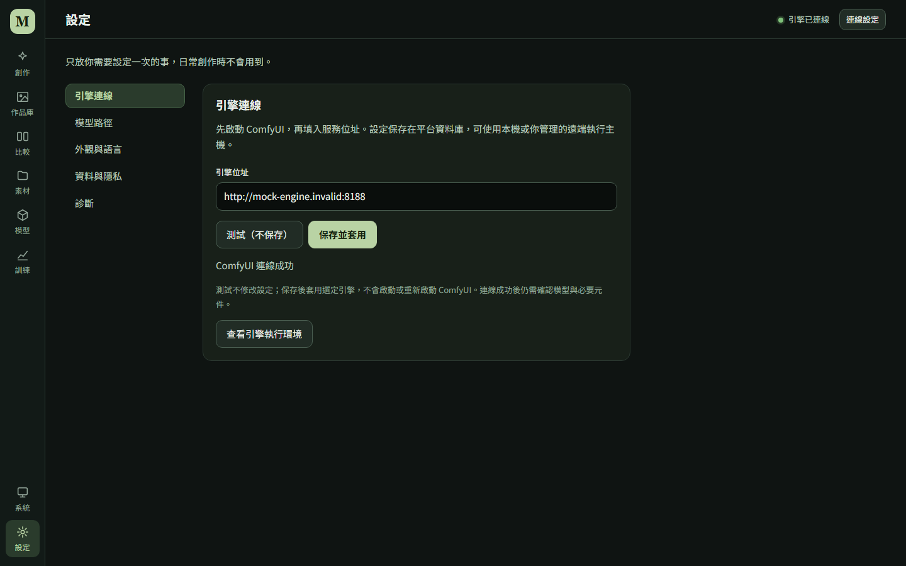
點擊放大 ↗深入閱讀：創作設定交換 · 診斷報告 · Docker 部署差異。
12
作品封存、創作設定匯出、診斷報告及完整備份，保護的資料範圍各不相同。
| 要做什麼 | 使用方式 |
|---|---|
| 暫時隱藏作品／素材 | 封存，可還原；不永久刪除，也不釋放圖片容量。 |
| 重用一組創作參數 | 保存支援的草稿，或匯出創作設定 JSON；來源素材與模型需另外保留。 |
| 追查任務或訓練問題 | 預覽並下載診斷／訓練報告；它們不含完整圖片與模型備份。 |
| 備份或搬到另一台電腦 | 停止所有資料寫入者，依完整停機備份與還原流程保存資料庫及對應檔案，另保留外部原圖、權重與訓練資料。 |
等生成或訓練確認終態與資源釋放，保存筆記與可保存的草稿。關閉瀏覽器不會停止後端 worker。
再依完整資料備份與還原盤點、備份與驗證。不直接複製正在寫入的 SQLite，也不以匯出 JSON 代替整個資料目錄。
虛擬環境依 lock 重建，不整包搬移。原圖、模型權重與 runtime 不在 Git，需另外還原；先做唯讀核對，再恢復生成或訓練。
排錯
先保留原資料與請求，再依錯誤類型處理。
平台與引擎是兩個服務。查看右上連線狀態與底部預檢，再到「設定 → 引擎連線」測試／保存；到對應模型分類同步，依提示補齊模型架構或元件。歷史模型清單不是現在在線的證明。
先處理欄位下方的錯誤與環境阻擋。被收合的進階欄位仍需要合法值；不要只看主要輸入。專用流程及 FLUX 使用各自的支援條件，不靠切換頁面繞過。
舞台可能顯示最近或選定的原任務結果。圖片尺寸由該任務保存，修改目前表單不會變更舊圖。核對舞台任務與狀態，完成新生成後再查看新結果。
先選取，再明確按底部「並排比較（2–4 張）」。超過四張時可批次整理或下載，但不能一次並排；先縮小選取。若按鈕暫停用，等選取資料讀取完，或依提示重新讀取選取狀態。
訓練候選標註只統計已保存的 train 圖片；來源、角色或原圖問題仍會讓候選待處理。保留圖及資料集阻擋另列，未保存編輯也會停用匯出。請看「資料出口」狀態及第二階段的四類檢查，不能為了湊滿進度把最終 test 改成訓練圖。原計數問題已由 UX01 修正。
準備只凍結設定並建立 run。先核對環境與 GPU 資源，再明確按「開始此 run 的訓練」。若出口或環境未就緒，先處理，不重複準備來跳過。
審查資料可在「資料集匯入、選擇與版本管理」重新選取；run 可由「查看歷史報告」或詳細 run 清單找回。未保存內容先保存；資料集與 run 的識別碼應保留，不能用新請求代替未知結果。
提交不明時，使用畫面提供的原請求恢復／查回入口，保留原 UUID、內容與引擎位址。已保存作品可離線預覽；未匯入的原引擎輸出仍需原來源可讀。不要直接重送、另造 UUID 或改到新引擎猜測結果。
先記下原錯誤、實際尺寸、模型、元件與環境，再檢查對應相容性與實測範圍。硬體回報、技術試訓與畫風／角色品質是不同結論；必要時用固定條件重做有限比較，不把放大顯卡或增加圖片數量當作保證。